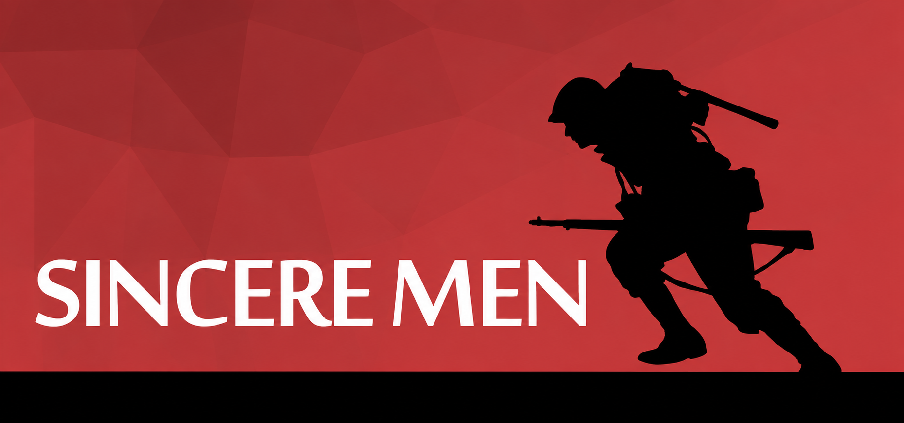

VR player interactions
Developed player interactions for grabbing, climbing, and detailed physics-based weapon handling to make actions feel direct and grounded in virtual reality.
Utopia Entertainment
A virtual-reality action game where I developed physics-driven player interactions, gameplay systems, enemy AI, vehicle navigation, and performance optimizations.

Developed player interactions for grabbing, climbing, and detailed physics-based weapon handling to make actions feel direct and grounded in virtual reality.
Implemented the gameplay systems and mechanics that connected player input, world interaction, combat, and moment-to-moment progression.
Built custom helicopter physics and aerial pathfinding systems to support responsive flight behavior and navigation through the game world.
Created spline-based vehicle navigation with obstacle avoidance for reliable movement along authored routes and through active encounters.
Implemented enemy behavior and supporting gameplay logic for combat encounters across the game’s environments.
Profiled and optimized game systems to maintain the consistent frame rate and responsiveness required for a comfortable VR experience.